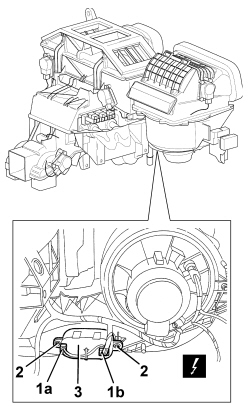

5040C44 FAN MOTOR ELECTRONIC VARIATOR - R+R
- Path
- Procedures > 50 AUXILIARY UNITS > 5040 AIR CONDITIONING CASING AND COMPONENTS > 5040C AIR CONDITIONING CASING AND COMPONENTS > 5040C44 FAN MOTOR ELECTRONIC VARIATOR - R+R
- Kind
- repair procedure (removal / refitting; the operation number is the code)
- Applies to
- all engines; all production periods
- Interactive page
- https://sloeber94.github.io/elrnDB/#/939010925
Applies to: all engines; all production periods
 Removing
Removing
 Refitting
Refitting1. Working under the right side of the dashboard, disconnect the electrical connections (1a, 1b).
Description | Component |
|---|---|
FAN SPEED VARIATOR |
2. Undo the bolts.
3. Remove the electronic variable valve timing.

Applies to: all engines; all production periods
Refitting
Removing- Check that the electronic variable valve timing is not damaged.
- Fit the electronic variable valve timing.
- Tighten the bolts.
- Connect the electrical connections.